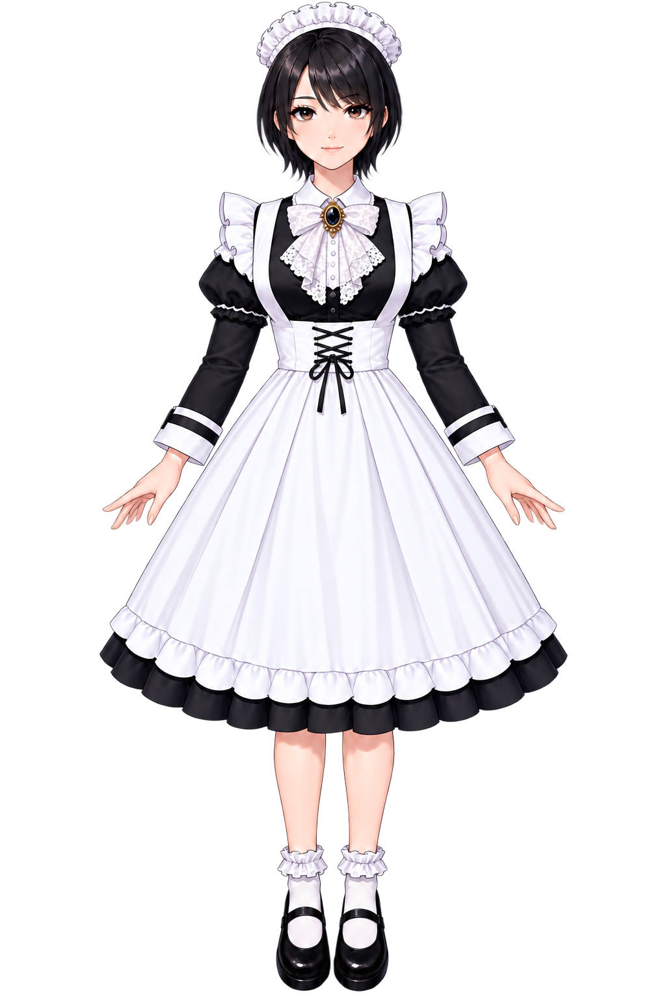
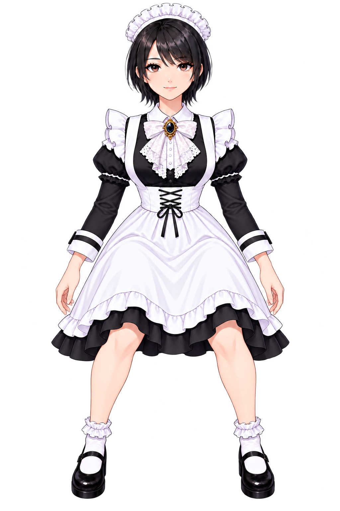
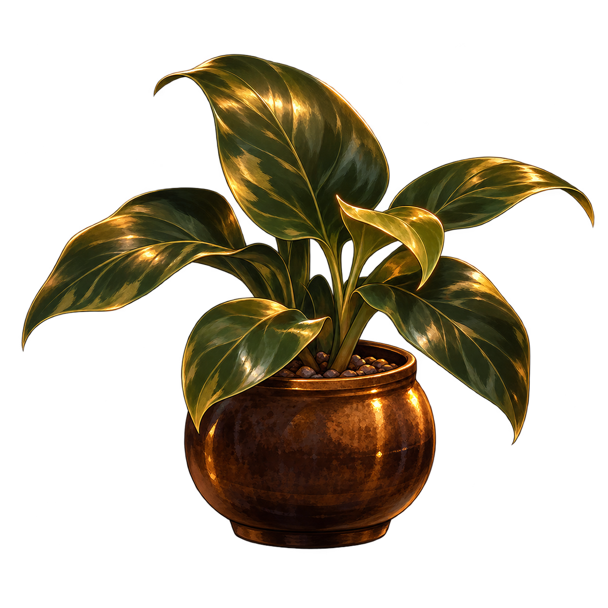

SQUAT BAR
GENERAL


ルナ
✦ 目標クリアホームから最初のスクワットを記録しましょう。
累計 0 回
太もも計測時のアクティブエネルギー概算に使います。
スクワット履歴・設定・解放スタッフをJSONファイルに保存、または復元できます。
記録の変更時に、この端末へ自動復元ポイントを保存します。
アプリの更新では保持されます。Safariのデータ削除や端末故障には、手動の書き出しもご利用ください。共有メニューから「リマインダー」を選び、通知時刻を設定できます。
カウンター越しのひとことと、毎日の小さな積み重ねを。